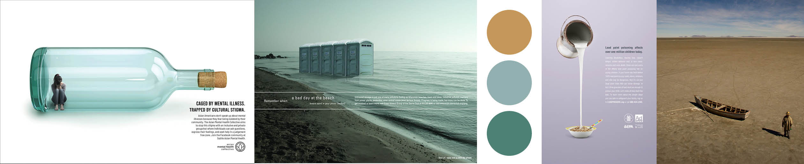
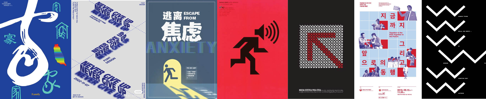
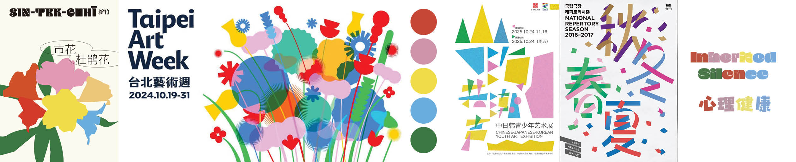
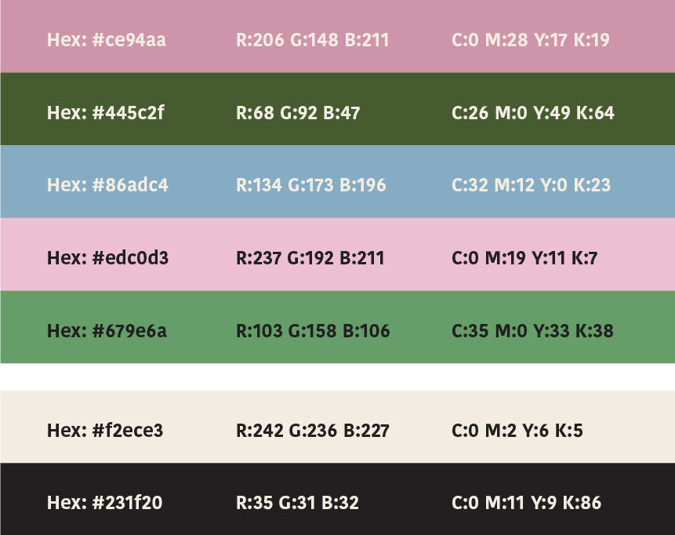
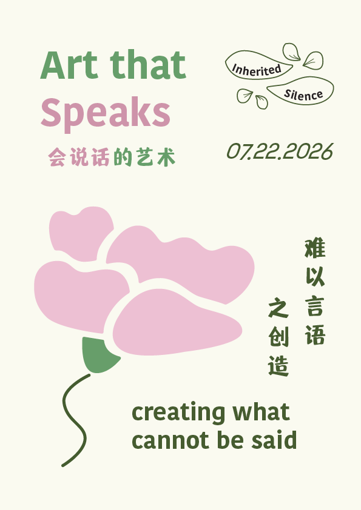
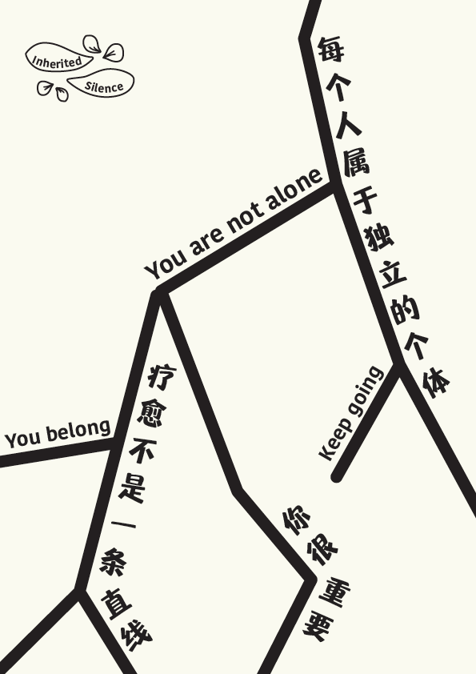
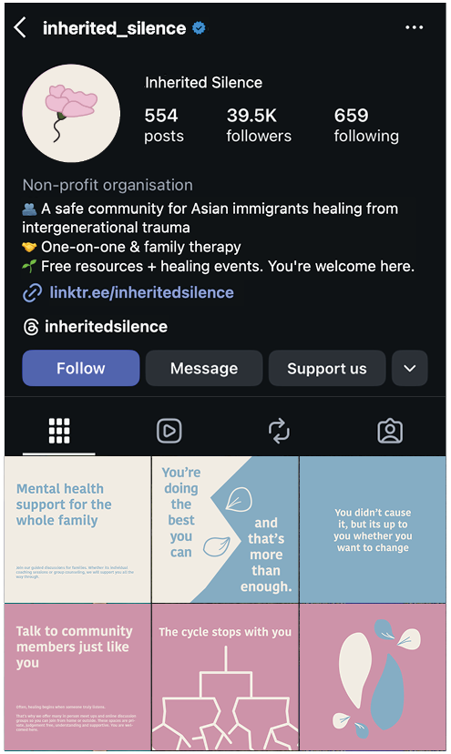
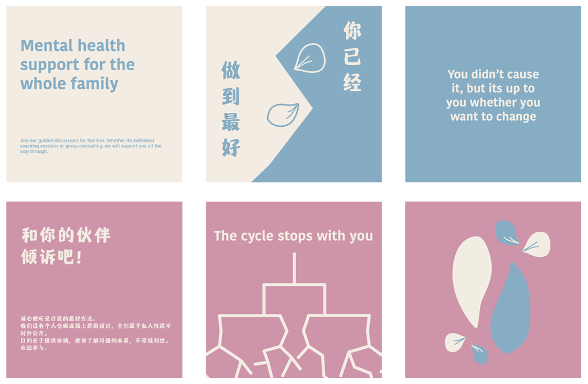
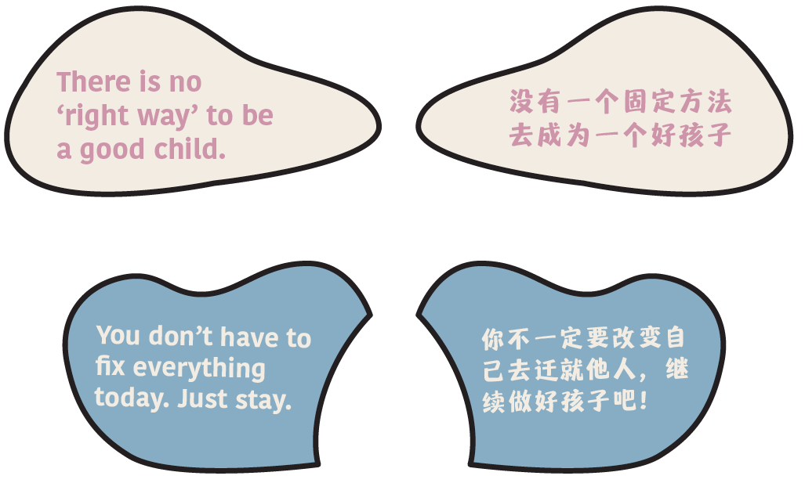

Activism Flexible Branding System
Branding, Graphic Design | 2026 | University Project


Background
This project explores how branding can support social change movements by building a safe and approachable community space for difficult conversations. Through research, strategic positioning and visual design, I developed a flexible brand system that encourages openness, connection, and conversation.
| Role | Tools |
|---|---|
| Brand Designer | Adobe Illustrator |
| Brand Researcher | Adobe Indesign |
| Adobe Premiere Pro | |
| Team | Timeline |
| Me! | March - June 2026 |
How might we create a visual brand identity that encourages conversations about intergenerational trauma within the Asian immigrant community?
Research
Research explored intergenerational trauma, cultural stigma, and existing support initiatives.
| Key Insights | Implications |
|---|---|
Silence is often mistaken as a sign of strength |
Branding should create a safe space for open conversations |
Existing initiatives focus on healing, not conversation |
Branding should encourage dialogue and community support |
Social media creates accessible support for young people |
Branding should leverage digital platforms to reach younger audiences |
Values
Family Connections
Community
Conversation
Safety
Visual Development



The last option was chosen as its simple and colourful design conveys both an uplifting yet peaceful atmosphere that aligns with my brand strategy to use a gentle and minimalistic aesthetic to provide a sense of calm and emotional safety for the community.
Final Branding System
Main Logo
Vertical Logo
Icon-Only Logo

Root Elements
Flower Elements


Poster Designs
Promotional Video

Instagram Feed Mockup

Social Media Post Design in both English and Chinese

Affirmation Cards

Tote Bag Mockup
Reflection
| Activism Branding | Researching | Flexible Design System |
|---|---|---|
| Branding doesn’t have to be primarily driven by consumption and creating a memorable identity, but can raise awareness and build a community that can help support others. | Researching the affected community and existing initiatives to ensure that the brand would not accidentally reinforce stereotypes and cultural appropriation. | Developing a flexible design system can be adapted to different contexts and audiences, extend across digital and physical media, and remain visually consistent as it evolves over time. |